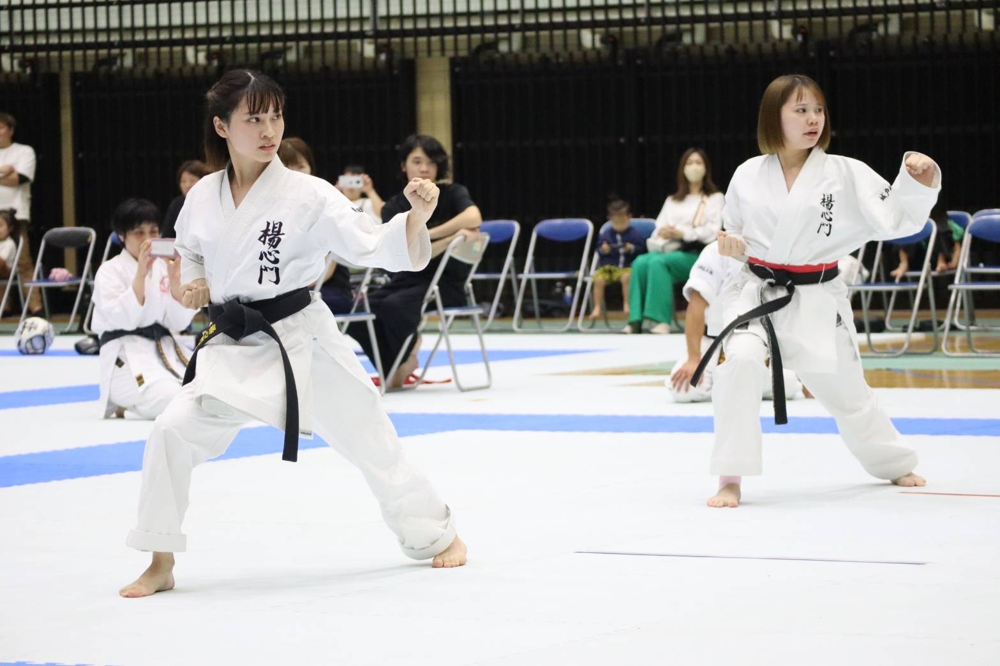

理念
宗師・開祖
指導者
お知らせ
活動記録
アクセス・道場紹介
お問い合わせ
理念
宗師・開祖
指導者
お知らせ
活動記録
アクセス・道場紹介
お問い合わせ
Techniques
技術体系
楊心門に伝わる基本・形・組手・武器法の全体像
Basics
基本と前進後退
基本
1. 四股突き（正拳突き）中段〜上段
2. 手刀打ち 中段〜上段
3. 左右空間突き 中段〜上段
4. 前蹴り 下〜中〜上段
5. 足刀 下〜中〜上段
6. 前廻し 下〜中〜上段
7. 後廻し 中段〜上段
前進後退
上級
1. 手刀受け
2. 上段受け
3. 下段払い中段逆突き
4. 中段受け中段逆突き
5. 猿臂裏拳打ち
6. 前蹴り
7. 足刀
8. 前廻し
9. 後ろ廻し蹴り
初級
1. 横突き
2. 横手刀打ち
3. 手刀受け
4. 上段受け
5. 下段払い
6. 中段受け
7. 前蹴り
8. 足刀
9. 前廻し
Kata Training
形鍛錬法

1. 目付けの鍛錬
一点集中（観の目）
2. 姿勢の鍛錬
中心点（聖中心力）
3. 呼吸法の鍛錬
深く正しい呼吸（呼吸力）
4. 正確さの鍛錬
ゆっくり正確に
5. スピード養成の鍛錬
体重移動及び攻撃の速さ
6. 高い相手との形
自分より高い相手と戦う
7. 同じ高さの形
自分と同じ高さの相手と戦う
8. 低い相手との形
自分より低い相手と戦う
9. 優美線の形
美しさの追求
10. 気を出す形
気を相手の前に出す形
Kata
形（楊心門 正流十拳）
名称
特徴・意味
1・2
龍虎拳
りゅうこけん
龍虎（りゅうこ）
（虎）手法
（龍）足法
3
昇龍拳
しょうりゅうけん
熊拳（ゆうけん） — 強く、荒く、恐ろしく
4
光龍拳
こうりゅうけん
隼拳（しゅんけん） — はやぶさ（閃光）の如く
5
飛龍拳
ひりゅうけん
虎拳（こけん） — 獰猛な虎の如く
6
雲龍拳
うんりゅうけん
鶴拳（かくけん） — 白鶴の舞い
7
青龍拳
せいりゅうけん
青龍（せいりゅう） — 若き激しい青龍が如く
8
双龍拳
そうりゅうけん
豹拳（ひょうけん） — 獰猛な黒豹が如く
9
白龍拳
はくりゅうけん
白龍（はくりゅう） — 達観した白龍が如く
10
無限龍拳
むげんりゅうけん
万有気魂（ばんゆうきこん） — 心身を統一し、天地を一体とした、魂の形
令和6年4月に新たに形を定める